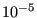

Next: *DEFORMATION PLASTICITY Up: Input deck format Previous: *DAMPING Contents
Keyword type: model definition
With this option the force-velocity relationship can be defined for dashpot elements. Dashpot elements only make sense for dynamic calculations (implicit *DYNAMIC, *MODAL DYNAMIC and *STEADY STATE DYNAMICS). For explicit *DYNAMIC calculations they have not been implemented yet. There is one required parameter ELSET. With this parameter the element set is referred to for which the dashpot behavior is defined. This element set should contain dashpot elements of type DASHPOTA only.
The dashpot constant can depend on frequency and temperature. Frequency dependence only makes sense for *STEADY STATE DYNAMICS calculations.
First line:
Second line: enter a blank line
For each temperature a set of lines can be entered. First line in the first set:
Example: *DASHPOT,ELSET=Eall 1.e-5
defines a dashpot constant with value  for all elements in element set Eall and all temperatures.
Example: *DASHPOT,ELSET=Eall 1.e-5,1000.,273. 1.e-6,2000.,273. 1.e-4,,373.
defines a dashpot constant with value at a frequency of and
with value  at a frequency of , both at a temperature of
. At a temperature of the dashpot constant is frequency independent
and takes the value
at a frequency of , both at a temperature of
. At a temperature of the dashpot constant is frequency independent
and takes the value  . These constants apply to all dashpot elements
in set Eall.
. These constants apply to all dashpot elements
in set Eall.
Example files: dashpot1, dashpot2, dashpot3.